775
Personas alcanzadas
Todos tienen la chispa.
Proponemos un enfoque de aprendizaje adaptable y accesible que transforma la percepción de la niñez sobre lo que es posible. Barreras como el contexto socioeconómico, la desigualdad de género o incluso las discapacidades médicas no deberían limitar el potencial de ningún niño —las superamos con experiencias STEM significativas que perduran mucho después de que el taller termina.
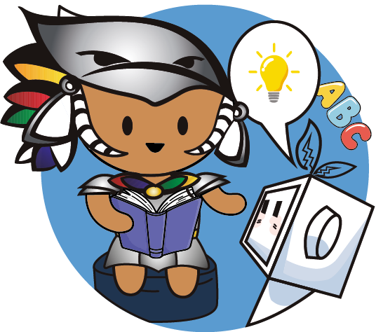
Difundimos el STEAM y la robótica en comunidades con acceso limitado —mujeres, migrantes y niñez con discapacidad—, convencidos de que todos tienen la chispa para cambiar su entorno.
Durante DECODE buscamos un impacto sostenido y tangible: 4+ talleres de 3 sesiones cada uno, 4+ alianzas con instituciones STEAM, y que todo taller sea «Make & Take» —cada niño construye y se lleva a casa un proyecto.
Este pequeño robot fue la estrella de nuestros talleres esta temporada —un proyecto que cada niño construyó con sus propias manos y se llevó a casa, convirtiendo una sola sesión en algo que perdura.
A futuro: ampliar nuestro alcance, diseñar materiales educativos propios y consolidar alianzas estratégicas para talleres recurrentes.
Al llevar STEAM y robótica a comunidades con acceso limitado no solo compartimos conocimiento: transmitimos valores de FIRST como la inclusión, el trabajo en equipo, la innovación y el impacto social. Nuestras iniciativas nos hacen embajadores porque:
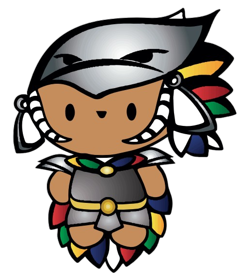
Ampliamos el alcance de FIRST a personas que de otra forma no tendrían acceso a estas oportunidades.
Promovemos la diversidad y la inclusión dentro de la ciencia y la tecnología.
Inspiramos a otros a involucrarse en STEAM y a formar parte de la comunidad FIRST.
Alineado con la misión de FIRST de cambiar vidas a través de la educación.
Motivamos a más personas a crear equipos de robótica bajo el programa FIRST —o a integrarse al nuestro.
Talleres en contextos de vulnerabilidad, desplazamiento y discriminación, donde el STEM se convierte en una herramienta de empoderamiento, resiliencia y esperanza.
Cada niña y niño tiene una forma única de aprender y una chispa capaz de transformar su futuro. Creamos espacios STEAM inclusivos adaptados a distintas capacidades, orígenes y estilos de aprendizaje, donde cada participante se siente capaz, escuchado y valorado. El talento no depende de las circunstancias de una persona, sino de las oportunidades que recibe para desarrollarlo.
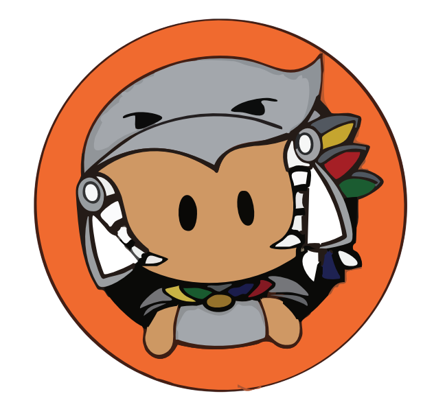
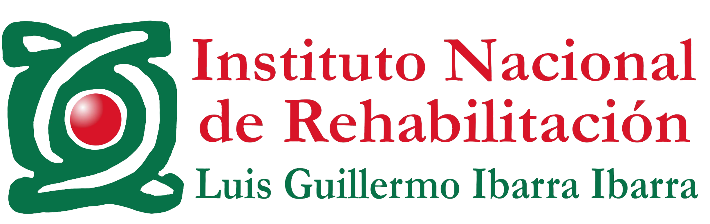
En el Instituto Nacional de Rehabilitación, talleres de robótica para niñez y juventud en recuperación —promoviendo la inclusión, acercándolos a la tecnología y fortaleciendo su confianza para descubrir todo lo que pueden lograr.
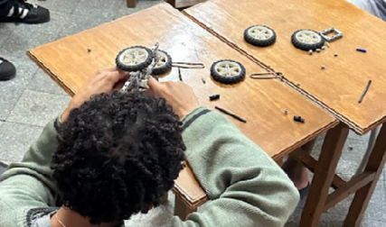
Un taller de robótica para niñez migrante, adaptando nuestras actividades y métodos a sus contextos, idiomas y estilos de aprendizaje para acercarles el STEAM mediante experiencias inclusivas.
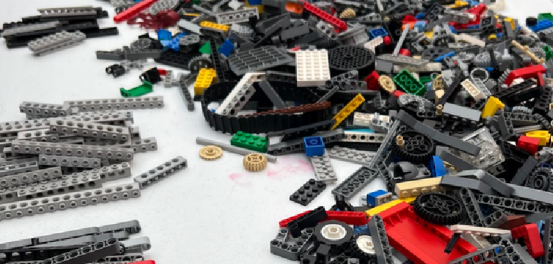
El taller «México Verde» combinó conciencia ambiental y creatividad: la niñez aprendió sobre reforestación y elaboró manualidades con materiales reciclados, promoviendo la reutilización y los hábitos sostenibles.
En el FARO Indios Verdes, un taller de robótica de dos sesiones donde se aprendieron las bases de los robots minisumo —construcción y programación— fomentando el pensamiento lógico, el trabajo en equipo y el interés por el STEM.
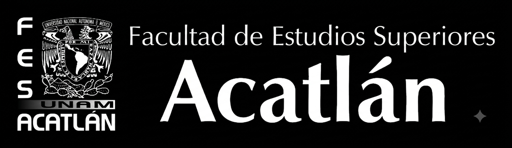
El taller «México Verde» sensibilizó a niñez y adolescencia sobre la reforestación y el cuidado del medio ambiente, conectando la tecnología y la responsabilidad social con iniciativas ecológicas.
Adaptar la educación STEAM a distintos estilos de aprendizaje.
Crear espacios inclusivos y accesibles para toda la niñez.
Impulsar la confianza y la participación en ciencia y tecnología.
Derribar barreras educativas y sociales en STEAM.
Demostrar que todos tienen la capacidad de aprender y crear.
Un programa de verano anual en la planta de ensamble en Toluca, México, de nuestro patrocinador Italika —marca mexicana de motocicletas de Grupo Elektra— para las hijas e hijos de sus colaboradores. Más que una forma de agradecer a Italika por patrocinarnos, es una oportunidad para que estos niños crezcan como creadores, solucionadores de problemas y líderes seguros que darán forma a su futuro.
Introduce el STEM mediante actividades dinámicas, creativas y accesibles que despiertan la curiosidad y motivan a explorar nuevas formas de aprender.
Incorpora valores de FIRST a través de proyectos tipo FLL con LEGO Spike, retos colaborativos y actividades que fortalecen las habilidades técnicas, la creatividad, el trabajo en equipo y la resolución de problemas reales.
Para quienes completaron las fases anteriores: diseñan, construyen y programan robots minisumo en C++ mientras fortalecen el liderazgo, el trabajo en equipo y la presentación de ideas.
Medimos el impacto con encuestas y seguimiento continuo: el 90% de los participantes continúa por todas las fases, desarrollando habilidades técnicas y blandas que los convierten en agentes de cambio. Cada verano, más de 100 niñas y niños se gradúan motivados para seguir carreras STEM.
Santi ahora les enseña a sus primos a construir robots y sueña con ser el primero de su familia en llegar a la universidad —un recordatorio de que nuestro impacto va mucho más allá del programa de verano.
Colaboramos con instituciones, empresas y otros equipos FIRST para lograr un cambio significativo y hacer sostenible este pilar. Estos son los aliados estratégicos detrás de nuestro trabajo:
Llevamos talleres STEM a sus pacientes y nos conectamos con sus investigadores e ingenieros biomédicos, ampliando nuestra perspectiva sobre las carreras STEM.
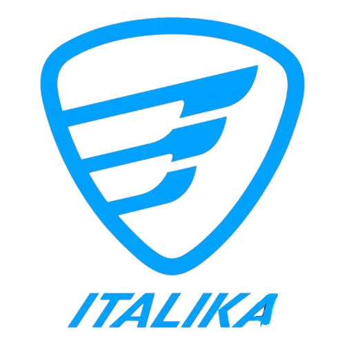
Marca mexicana de motocicletas de Grupo Elektra. Aportan el espacio, los materiales y los recursos; nosotros nos encargamos de todo lo demás —logística, planeación e instrucción— dando vida a Ensamblika cada verano.
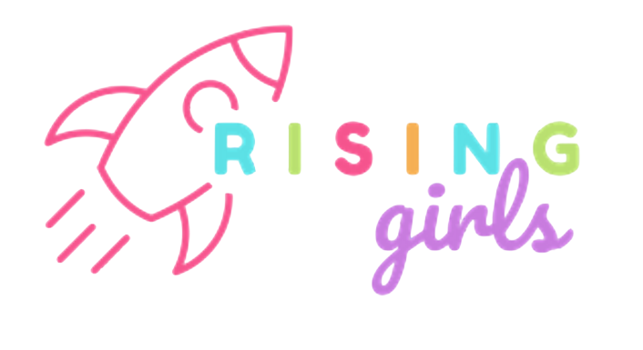
Una organización civil que empodera a niñas en STEM. Co-organizamos talleres: ellas nos enseñan a conectar de verdad con las niñas, y nosotros compartimos nuestra experiencia en logística.
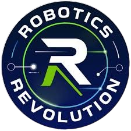
Una escuela de robótica que nos asesora en materiales y nos da acceso a impresoras 3D y herramientas, haciendo nuestra dinámica Make & Take sostenible y profesional.
Damos continuidad a nuestras iniciativas en el tiempo, adaptándolas a la comunidad. Así ha evolucionado el pilar —toca cada año para ver más.
Inspiramos a nuevas generaciones a integrarse al STEAM mediante talleres de robótica para niñez y adolescencia.
Queremos que el STEAM sea más que una experiencia de un día: un espacio continuo de aprendizaje y crecimiento.
Demostramos que las mujeres pueden lograr grandes cosas en áreas STEAM, rompiendo barreras y estereotipos.
Todos tienen la chispa para aprender. Con pasión y metas claras, todos podemos lograr grandes cosas.
Con otros equipos, mediante mentorías y acompañamiento continuo.
Un desglose de cómo se distribuyen las 775 personas alcanzadas entre los talleres y aliados de la temporada:
Cada iniciativa se diseña en torno a las necesidades reales de cada comunidad, adaptando cada taller, feria STEM o conferencia para hacer el STEAM accesible, atractivo y significativo para cada grupo con el que trabajamos.
Documentamos cada proyecto en Notion con encuestas, retroalimentación y seguimiento, lo que nos permite dar seguimiento al crecimiento de la niñez en STEAM y compartir sus historias para inspirar a más personas en la comunidad FIRST.
El talento no depende de dónde empiezas, sino de las oportunidades que recibes. Si quieres llevar un taller a tu comunidad o aliarte con nosotros en este pilar, hablemos.
Contáctanos →